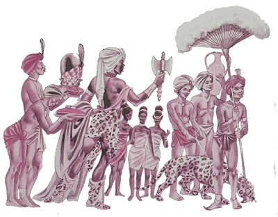
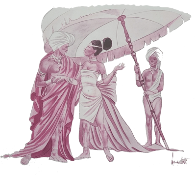
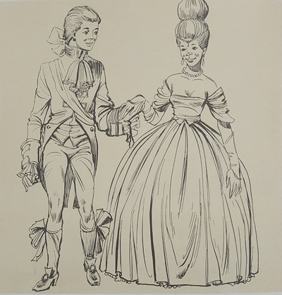
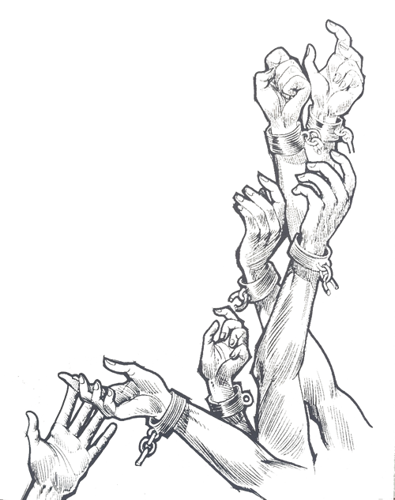
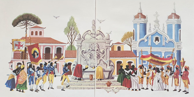
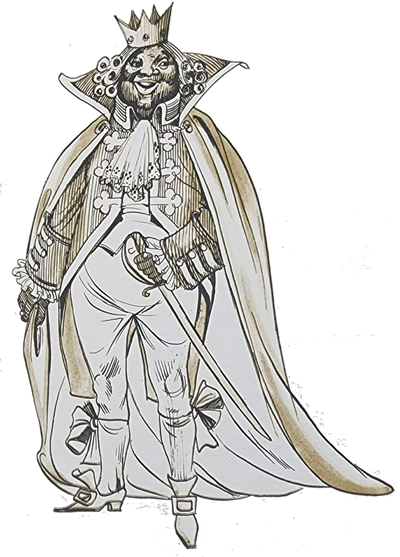

O Arrelia, sentado numa cadeira de preguiça no saguão do hotel, lia tranquilamente um livro enquanto as crianças procuravam encontrar uma brincadeira para logo mais tarde. Andavam de um lado para o outro, inquietas.
Interrompendo a leitura, o Arrelia disse-lhes:
- Por que vocês não se sentam e não descansam um pouco? Assim vão ficar “cansaudos”!
- Estamos vendo se achamos alguma brincadeira mas não conseguimos chegar a um acordo por causa do Carlinhos. Ele hoje amanheceu com mania de grandeza. Não concorda com nada, só ele é que sabe! . . . Parece um rei! – disse Jaci com exaltação.
O Arrelia deu risada da expressão da menina:
- O Carlinhos parece um rei? É muito boa! Só se for o Chico Rei!
- Por que Chico Rei? – quis saber a menina.

Pondo o livro no colo, o Arrelia esclareceu:
- Porque, segundo a lenda, era um rei da cor de Carlinhos e reinou aqui no Brasil. Mas não era um rei de todo o povo, não. Possuía um reinado particular composto apenas de negros, aqui em Minas Gerais.
- Conte como foi, Arrelia – pediu Jaci, puxando uma cadeira e sentando-se, no que foi imitada pelas outras crianças.
- Para a estória ficar completa – disse o Arrelia, passeando o olhar pelas crianças – precisamos dar um pulo à África.
- É muito longe e já estou ficando com saudade de casa! Não vamos à África, não! – exclamou Carlinhos.
O Arrelia caiu na gargalhada acompanhado pelos outros. Com muito esforço, ele conseguiu falar:
- É demais! Irmos até à África como se fosse ali na esquina! Esse Carlinhos não tem jeito!
- Mas você falou, ué! – queixou-se o menino, desconcertado pelas risadas do Arrelia e das crianças.
- É um modo de dizer – explicou o Arrelia. Vamos somente em pensamento!
Vieram as caçoadas das outras crianças a Carlinhos e o Arrelia precisou intervir.
- Não tem importância! – exclamou o menino. Podem caçoar. Suportarei tudo como um rei!
- Está vendo, Arrelia? O que foi que falei? Esse menino não está hoje com mania de grandeza? – disse Jaci.
Fazendo força para não rir, o Arrelia transportou-se à África:

- Foi no tempo em que a escravidão era um meio de vida. Havia muitos homens que se dedicavam a este desumano comércio e iam à África aprisionar os negros para vende-los como se fossem mercadorias sem sentimentos e sem vontade. Atacavam e destruíam aldeias, e os negros que reagiam eram punidos quase com a morte. Os prisioneiros, depois de “amarraudos”, eram levados a imundos porões de navios e conduzidos aos lugares onde seriam vendidos. Durante os longos meses que duravam as viagens, grande era o número de escravos que morriam, geralmente de fome ou das doenças que grassavam nos sórdidos porões.
Tinha uma pequena aldeia à margem de um rio africano na qual sempre havia festas porque seu povo era muito alegre. Era um povo alegre porque possuía um rei muito bom e inteligente que sabia governar com sabedoria a sua tribo.

Numa certa noite, quando se realizava uma das festas que eram comuns ali, os brnacos atacaram de surpresa. Pouco sobrou da alegre aldeia. Alguns negros fugiram, outros foram mortos ou abandonados por serem velhos ou estarem feridos, e os restantes aprisionados, A família real, o rei, a rainha e seus filhos, estava entre os últimos.
Depois de amarrados, os cativos foram levados para a costa e metidos no porão de um velho navio. Começou a travessia. Como eu disse antes, muitos morriam de fome ou de doenças naqueles sujos porões e o mesmo aconteceu desta vez. Foi grande a quantidade dos que morreram. O rei conseguiu sobreviver juntamente com um de seus filhos. Mas os outros filhos e também a rainha não resistiram. Após vários meses de viagem, o navio chegou ao Brasil. Aquela leva de escravos foi vendida e enviada para trabalhar em Minas Gerais. O rei africano recebeu o nome de Francisco e ficou conhecido por Chico.
- Não é nada agradável passar de rei a escravo, não é mesmo? – comentou Jaci.
- É “verdaude” – concordou o Arrelia. Mas Chico aceitou a sua sorte e tratou de trabalhar com gosto.
- E o filho dele? – quis saber Marisa.
- Ficou trabalhando junto com o pai – esclareceu o Arrelia.
- E também não se revoltou?
- Não, não se revoltou. Tratou de seguir o exemplo do pai.
Logo os dois ficaram muito queridos por causa de sua dedicação ao serviço. Chico começou a sonhar em ter o seu reino aqui no Brasil. Era inteligente, formulou um plano e tratou de realizá-lo.
- E que plano era esse? – perguntou Iberê, demonstrando grande impaciência.
- Calma que já vai saber – respondeu o Arrelia, ajeitando-se melhor na cadeira.

- Chico – continuou ele – começou a guardar todo o dinheiro que ganhava. Como era muito esforçado e trabalhava com capricho, seu senhor sempre lhe dava algumas moedas, que iam imediatamente juntar-se às anteriores. Depois de muitos sacrifícios, conseguiu acumular o suficiente para comprar a liberdade de um escravo. Mas não pensem que comprou sua própria liberdade, não. Comprou a de seu filho. Chegou ao seu senhor e disse-lhe:
- Graças à sua bondade, consegui acumular o suficiente para libertar um escravo.
- Já sei – respondeu seu senhor. Quer comprar sua liberdade, não é? E bem a merece.
- Não, não é a minha liberdade que desejo. É a de meu filho.
O senhor de Chico ficou muito “impressionaudo” com a nobreza de seu escravo. O negócio foi acertado e o filho de Chico ganhou a liberdade. Aí os dois uniram suas forças. Um juntava dinheiro daqui e o outro de lá. Transcorreu algum tempo e novamente Chico se apresentou ao seu senhor:
- Agora desejo comprar minha própria liberdade.
Tão logo se viu livre, foi morar com seu filho numa pobre cabana. Trataram de juntar mais dinheiro e libertaram outro escravo que pertencia à sua tribo. Por sua vez, os três economizaram dinheiro e libertaram um quarto. E assim continuaram até que todos os escravos que pertenciam à tribo de Chico ficaram livres.

Chico, agora conhecido por Chico Rei, continuou a ser o rei de sua gente e formaram um reino que ele passou a dirigir com grande capacidade. Chico casou-se e seu filho também, formando uma nova família real: Chico era o rei, seu filho, o príncipe. Sua nora, a princesa, e sua nova esposa, a rainha.
Todos trabalhavam em conjunto, e com o dinheiro economizado em comum, Chico Rei comprou uma rica mina de ouro para sua tribo. O lucro proveniente desta mina era repartido entre o seu povo, menos uma parte, que Chico reservara para comprar a liberdade de escravos de outras tribos.

Pouco a pouco, o reino de Chico Rei foi ficando muito importante. Belas construções foram sendo erguidas, ruas foram sendo formadas e começou a tomar jeito uma verdadeira cidade.
Agora já podiam dar-se ao luxo da alegria, e grandes festas eram ali realizadas. Também construíram uma igreja muito bonita, onde iam em procissão uma vez por ano, no dia de Reis.
Quando chegava o dia de Reis, Chico, a rainha, o príncipe e a princesa seguiam pomposamente para a igreja, acompanhados pelos seus súditos. As moças que acompanhavam a rainha como damas de honra costumavam cobrir os cabelos com pó de ouro extraído da rica mina que possuíam.
- Cobriam os cabelos com pó de ouro? – surpreendeu-se Jaci. Para que tanto luxo?
- Era uma coisa “boniuta” de ser vista. Mas havia uma finalidade. Antes de deixarem o templo, as damas de honra lavavam os cabelos nas pias da igreja e o ouro em pó caía ali. Sabem para que era “usaudo”?
- Não consigo imaginar – disse Marisa.
As outras crianças sacudiram a cabeça demonstrando que também não sabiam qual era a finalidade.
- Para libertar outros escravos! – esclareceu o Arrelia, quase pulando da cadeira. Aquele ouro era recolhido e servia para comprar a liberdade de outros pobres cativos. Vejam que belo exemplo de fraternidade.
A volta era muito “boniuta”, pois Chico e seus companheiros dançavam e cantavam músicas africanas, enquanto o som alegre dos sinos e o estouro dos rojões enchiam de festa os ares.